Software Architecture Documentation - 888casino
1. Overview
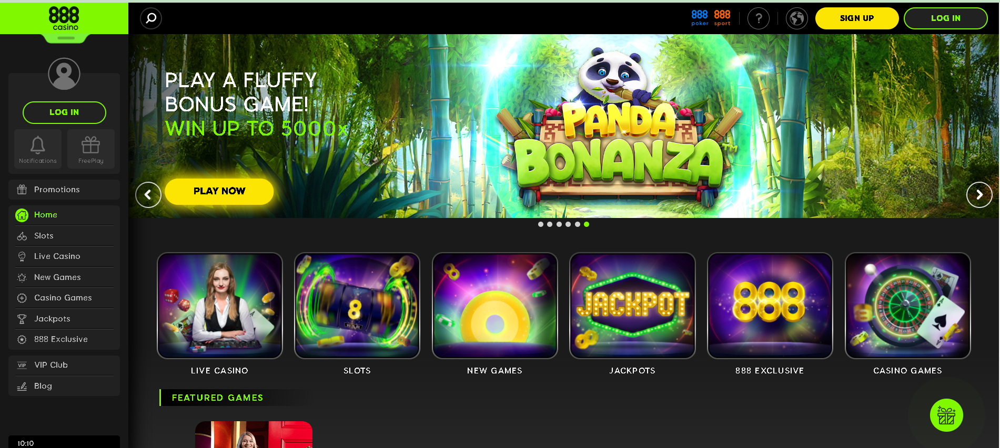 888casino.com is a popular online gambling platform that offers various casino games such as slots, blackjack, roulette, and live dealer games. To support such a comprehensive platform, 888casino must employ a sophisticated software architecture. Below, I'll explain the potential software architecture that can be incorporated for an online casino platform like 888casino, covering the frontend, backend, CDN, and other essential tools.
2. Frontend Architecture
Technologies used: HTML, CSS, JavaScript (React)
Responsive design and client-side rendering techniques.
below screenshots to view used Doctype HTML5 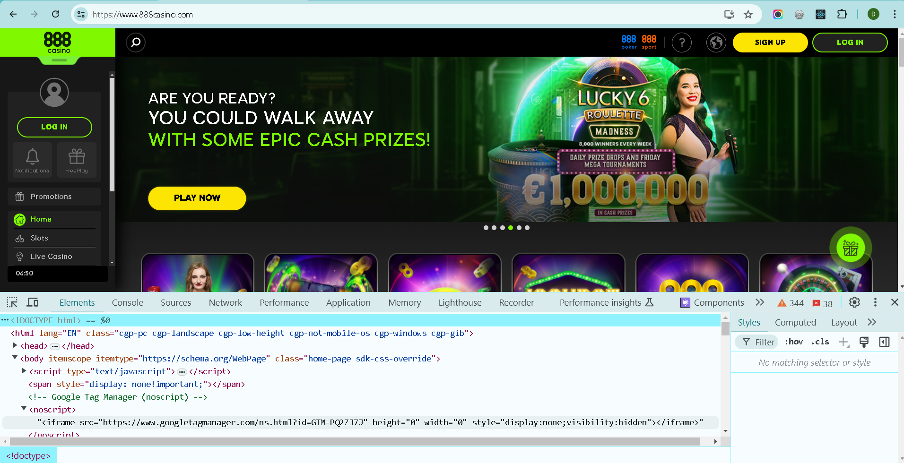
below screenshots to view used css styling. 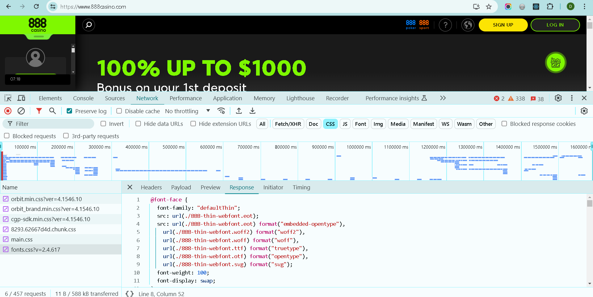
below screenshots to view used JQuery library load on this website. 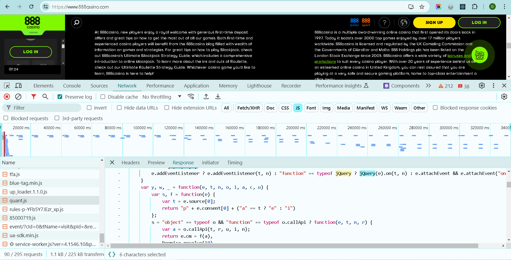
it Used Swiper slider load on this website.
Its support Responsive mobile view ,They wrote media Queries to handle the page-responsive.
below screenshots to view used React JS (this page is built with React JS Frame Work) from the Below screenshot, You can see the react packages. 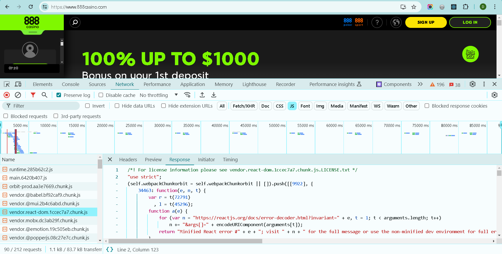
3. Backend Architecture
Server-side technologies: Node.js they use nodejs to bind data https://cdn.cookielaw.org/consent/67c16a5f-0778-48f2- 8736-959a572646eb/018e319b-70c4-7651-9df8-000cb6b7da66/en.json
Default Settings Progressive Web App (PWA) associated with 888casino: 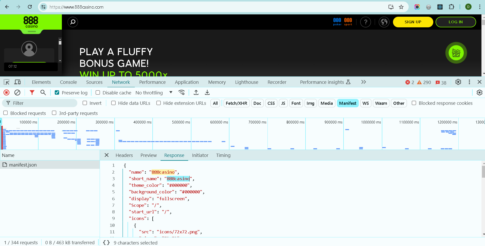 This JSON manifest file provides essential metadata about the Progressive Web App associated with 888casino. It defines how the app should appear, behave, and what resources (icons) it should use. This file is crucial for PWAs as it enables them to be installed and behave more like native apps on supported platforms.
Database management: MySQL/MongoDB
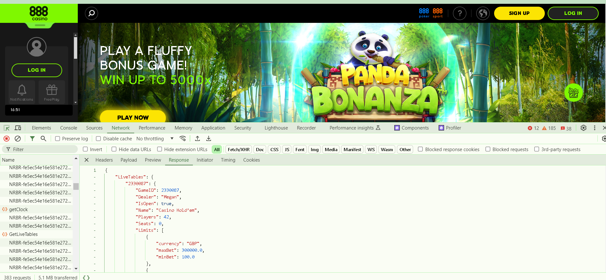
This kind of structured data can be stored in either MySQL or MongoDB:
4. CDN and Content Delivery
888 Casino uses various cloud services and CDN
- Amazon CloudFront: A CDN service that delivers content with low latency and high transfer speeds. 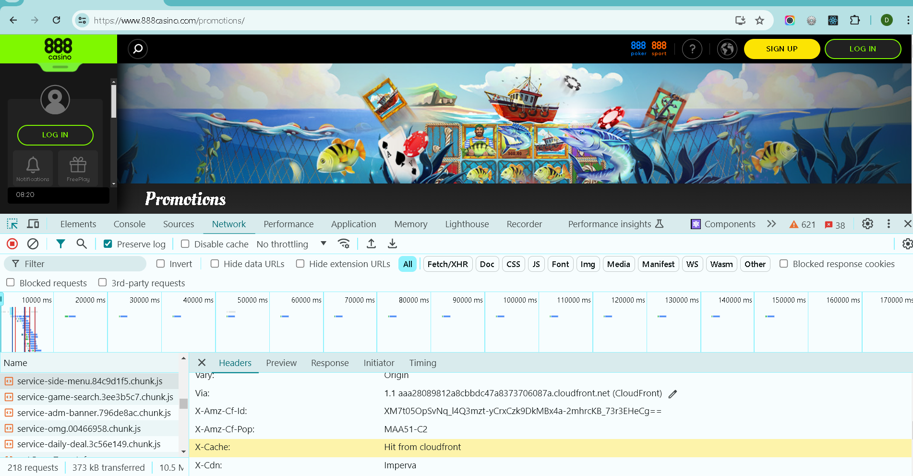
- Cloudflare: Provides CDN services, DDoS protection, and performance optimization.
5. Third-Party APIs Used
Payment Apis
The site integrates with multiple payment gateways to facilitate transactions. This includes APIs from PayPal, Skrill, NETELLER, and credit card processors. 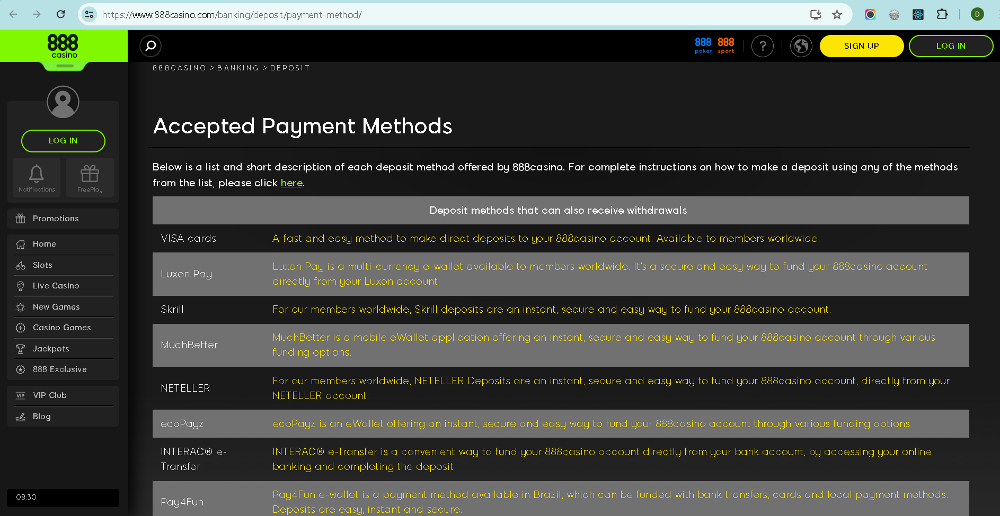 https://www.888casino.com/banking/deposit/payment-method
Analytics APIs
Google Analytics is used for tracking user interactions and website performance, helping the team to optimize the user experience. 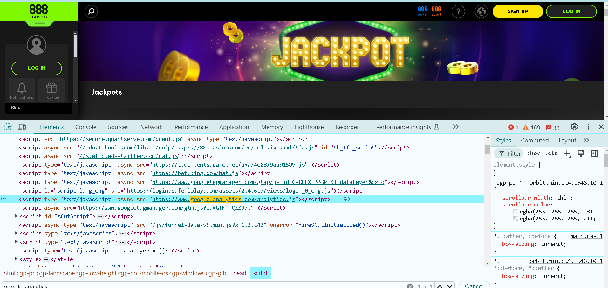
It Used Webpack module bundler
"The 888casino website uses Webpack to bundle its JavaScript modules, optimizing the site's performance by combining multiple files into fewer bundles, enabling efficient code splitting, and utilizing various loaders and plugins for task automation and file transformation." 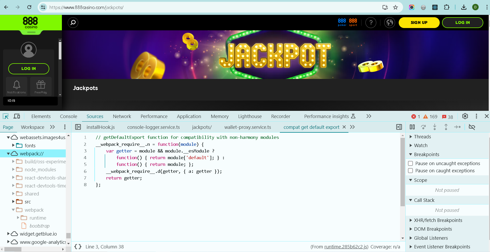
And i see the Recaptcha json it used rechaptcha 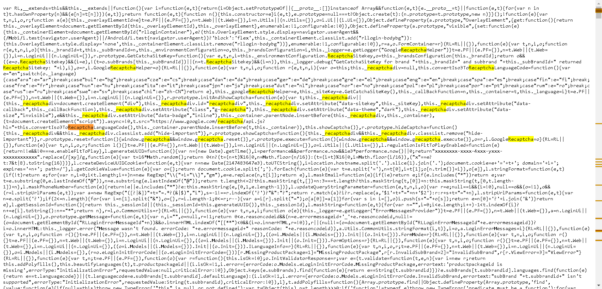 sdkUrl":"https://login.safe-iplay.com/js/rl-login-sdk-v2.min.js","enableCaptcha":false
Google Cloud Storage (GCS)
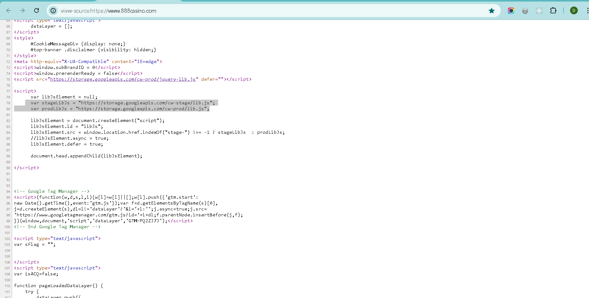 it used google clour storage, Google Cloud Storage is a service offered by Google that provides scalable, secure, and durable object storage. It is often used to store and serve large amounts of static content such as images, videos, and, in this case, JavaScript files.
To indicate that the 888casino website uses "static.ads-twitter.com"
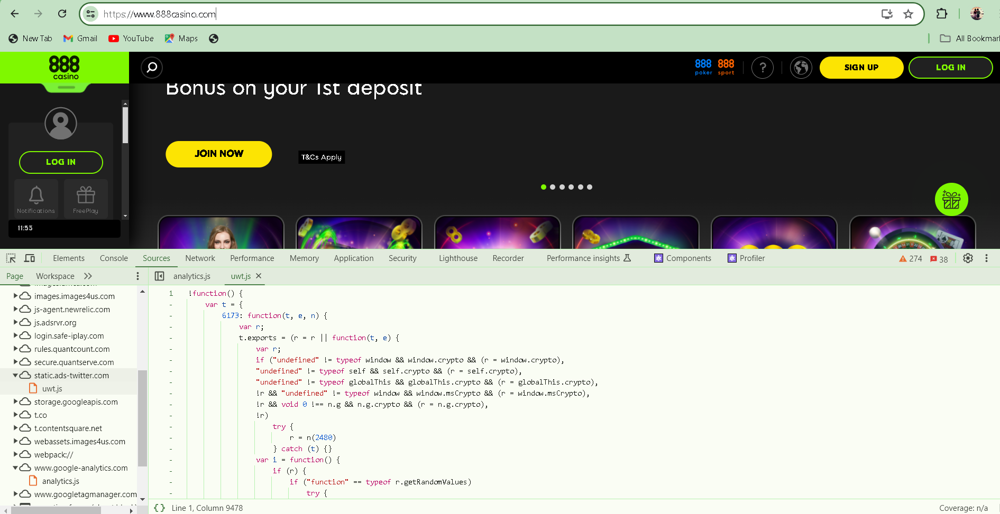 The 888casino website integrates Twitter ads and tracking services, utilizing 'static.ads-twitter.com' for delivering advertisements and tracking user interactions with these ads.
6. Scalability and Future Considerations
How the architecture handles scalability and plans for future enhancements.
Suggestions for Enhancing 888 Casino's Features
- 1. Enhanced Personalization AI-Driven Recommendations: Implement AI algorithms to provide personalized game recommendations based on user preferences and past activity. This can enhance user engagement and satisfaction. Customizable User Profiles: Allow users to customize their profiles with avatars, backgrounds, and other personalization options. This can create a more immersive and personalized experience.
- 2. Social Features Social Gaming Integration: Enable users to connect with friends, join gaming communities, and participate in social gaming events. Features like friend lists, live chat, and multiplayer games can enhance the social aspect. Live Streaming and Tournaments: Introduce live streaming of games and regular tournaments. Users can watch live games, participate in competitions, and interact with streamers and other players.
- 3. Improved Customer Support 24/7 Live Chat Support: Provide 24/7 live chat support to address user queries and issues promptly. A dedicated support team can enhance the overall user experience.
- 4. Interactive Tutorials and Guides In-Game Tutorials: Provide interactive tutorials for new users to learn how to play various games. These can include video guides, step-by-step instructions, and practice modes. Strategy Guides: Offer comprehensive strategy guides and tips for popular games. This can help users improve their skills and increase their chances of winning.
7. Conclusion
The software architecture of 888casino is a robust and sophisticated system that supports a seamless and engaging user experience. By leveraging modern frontend technologies like React for dynamic and responsive interfaces, and powerful backend solutions such as Node.js for efficient data handling, the platform ensures high performance and reliability. The integration of CDN services like Amazon CloudFront and Cloudflare enhances content delivery and security, while third-party APIs facilitate smooth payment processing and detailed analytics.
Looking ahead, 888casino can further enhance its platform by incorporating AI-driven personalization, social gaming features, and improved customer support. These enhancements will not only elevate the user experience but also position 888casino as a leader in the online gambling industry. Overall, the strategic combination of cutting-edge technologies and continuous innovation will enable 888casino to scale effectively and meet the evolving needs of its users.